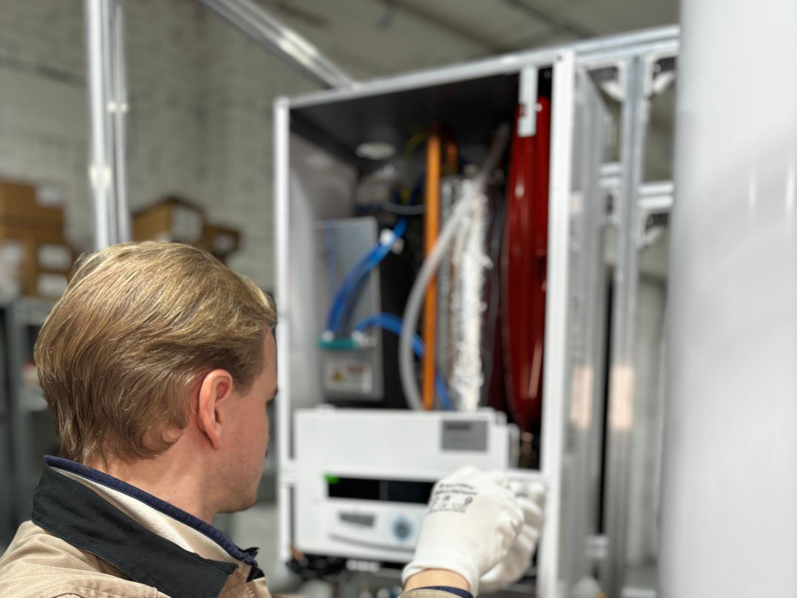

Going tankless changes how your home makes hot water. There is no tank to keep hot, so no energy is spent reheating stored water while you sleep or travel. When a faucet or shower opens, the unit senses flow and fires, heating water on demand through a heat exchanger. The result is a continuous supply for as long as you stay within the unit's rating, a compact footprint on the wall, and a lifespan that can be nearly double that of a typical tank. Families across Independence, MO often choose tankless during a replacement or remodel for exactly those reasons.
A good tankless install starts with math, not tools. We total your peak demand in gallons per minute, such as a shower, a kitchen sink, and the dishwasher at once, and compare it against the temperature rise your incoming water needs in winter. That tells us the real capacity you need. Next we check the supply side. Gas tankless units fire at up to around 199,000 BTU, so a half-inch line that fed an old tank is often too small. Condensing models vent through PVC or polypropylene and need a condensate drain, while non-condensing units need stainless steel venting. Electric units bring their own demands, often needing multiple large breakers and sometimes a service upgrade.
The small parts of the install matter for decades. We install service valves on every unit so descaling is quick, route the relief valve discharge properly, build the gas connection with a sediment trap, and run venting exactly to the manufacturer's specifications. Hard water gets addressed up front with honest advice on scale protection, because scale is what clogs heat exchangers. Recirculation is available too if a far bathroom takes too long to get hot. Permits are pulled where required, and you get a walkthrough of settings, error codes, and upkeep. For tankless installation in Independence, call (816) 219-8132.
Most of our service calls are for Water Heater Installation in Independence. Start there if you're not sure what you need.

Signs You Need Tankless Water Heater Installation in Independence
A heater that is starting to struggle rarely hides it for long, and the clues are easy to spot once you know them. Watch for these telltale signs that professional help is needed:
- More people or more fixtures than your current heater was sized for
- A home remodel or new build where the gas line and venting can be planned from scratch
- An addition or guest suite that is a long run from the main heater
- A water heater near the end of its service life, making this a natural time to switch
- A tank that cannot keep up with your household's morning routine
- A remodel that would benefit from a compact wall-mounted heater
- Standby losses on a tank that sits idle for long stretches
- Interest in a longer-lasting heater with replaceable parts
Don't Wait for a Total Failure
Most water heater failures start small: a popping sound from sediment, a damp spot under the drain valve, or a shower that goes lukewarm a few minutes sooner each week. Call Independence Water Heater at (816) 219-8132 at the first sign of trouble.
Talk to Us About Tankless Water Heater Installation
One call gets a technician scheduled and a clear price before any work starts.
Call (816) 219-8132 NowWhat Homeowners Ask Us Most
Why This Job Calls for a Pro
Why not install a tankless unit yourself? Because the risks and the details stack up quickly. Gas piping must be sized for a burner that may draw nearly 199,000 BTU, and leaks or undersized lines are both dangerous and costly. Venting has to match the unit exactly, with the right material, slope, and termination clearances, or combustion gases can end up where they do not belong. Electric units can overwhelm an older electrical panel, and warranty terms often depend on a qualified installation. Permits and inspections are common requirements as well.
Done professionally, a tankless system performs well and stays safe. We start with a real demand assessment, check the gas line, meter, and panel, and design venting that meets the manufacturer's requirements. The install includes service valves, a sediment trap, a correctly routed relief valve line, and a neutralized condensate drain where needed, then a test with several fixtures running. Just as important, we tell you plainly if a tank, hybrid, or smaller point-of-use unit would serve you better. The right fit matters more to us than the type of unit.
What to Expect From Our Team
Every visit follows a step-by-step method built around testing first and replacing parts only when the readings call for it. Here's exactly how a typical visit unfolds:
Flow Rate & Temperature Rise
We count the showers, sinks, and appliances that run together, then size for the coldest incoming water of the year rather than a mild day.
Infrastructure Review
We confirm the gas line and meter can feed the burner's full BTU demand, plan the right venting, and check the panel for electric units before quoting.
Installation to Spec
We mount the unit, run gas and venting to the manufacturer's specs, add isolation valves for descaling, and pipe the relief valve and condensate properly.
Test, Set, Explain
Startup includes a full-flow test, a gas pressure check with the burner at high fire, a leak check on every joint, and a clear walkthrough of settings and maintenance.
Repair or Replace? Let's Figure It Out.
Tell us the age, fuel type, and symptoms, and we'll help you sort out the next step.
Call (816) 219-8132 TodaySimple Ways to Extend Your Water Heater's Life
A few simple habits, like an annual flush and a quick look at the relief valve, can add years to a tank. Start with these practical measures our team relies on:
- Hard water shortens tankless life, so ask about scale protection
- Write down any error codes and call early rather than resetting repeatedly
- Do not cut power to a unit in a cold space, since its freeze protection needs electricity
- Avoid cranking the temperature higher than you need; about 120F works for most homes
- Clean the inlet water filter screen a few times a year
- Make sure the outside vent and intake are never blocked
- Flush the unit with a descaling solution annually to keep scale off the heat exchanger
DIY vs. Professional Tankless Water Heater Installation
Some simple checks are fine to do yourself, but most water heater repairs benefit from professional tools, training, and experience. Here's how the two approaches stack up:
| Consideration | Doing It Yourself | Professional Service |
|---|---|---|
| Capacity | Sized by the box, not your demand | Sized by GPM and winter temperature rise |
| Gas Line | No check of meter or pressure | Piping sized to the burner |
| Exhaust | Exhaust risk from improper venting | Venting built to the manufacturer's specs |
| Power Needs | Panel capacity not checked for electric units | Service upgrades flagged up front |
| Maintenance Access | Hard water left unaddressed | Isolation valves installed for quick descaling |
| Result | Lukewarm water and error codes | Tested at full flow and set up to last |
Let's Get Your Hot Water Back
Cold showers and damp floors don't get better on their own. Independence Water Heater can have a technician headed your way soon.
Tap to Call (816) 219-8132Where We Provide Tankless Water Heater Installation
We bring tankless water heater installation to homes and businesses in town and across the nearby communities. Pick your area to see local details.